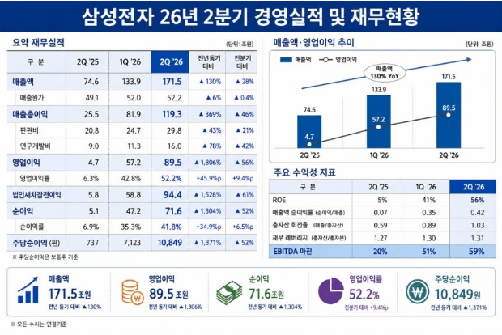
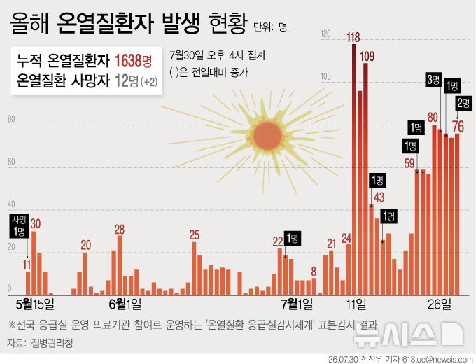

7/31(금) · 기준 2026-07-30 22:00 ~ 2026-07-31 06:00
엑셀 다운로드
"이미지 다운로드"를 누르거나, 이미지를 길게 눌러 저장한 뒤 카톡으로 보내세요.




![[단독]삼전닉스, 임원 평가-사원 채용때 ‘AI 능력’ 본다](images/infographics/article_10_3.png)

![[뉴시스] 건설업, 올 상반기만 2092곳 폐업…12년 만에 최다](images/graphics/뉴시스_02.jpg)
![[뉴시스] 공정시장가액비율 올리나…80% 땐 보유세 반포자이 3178만원](images/graphics/뉴시스_03.jpg)
![[뉴시스] 15억 이하로 몰린 수요…중랑구 상승률 10년만에 최고](images/graphics/뉴시스_04.jpg)
![[뉴시스] 한화그룹 김동관, 4년 만에 수석부회장 승진](images/graphics/뉴시스_05.jpg)
![[뉴스1] [그래픽] 원·달러 환율 추이](images/graphics/뉴스1_06.jpg)
![[뉴스1] [오늘의 증시] 7월 30일 코스피 코스닥](images/graphics/뉴스1_07.jpg)
![[뉴스1] [그래픽] 코스피·코스닥 추이](images/graphics/뉴스1_08.jpg)
![[뉴스1] [오늘의 그래픽] 낮엔 40도, 새벽엔 30도 육박…24시간 '극한 폭염'](images/graphics/뉴스1_09.jpg)
![[뉴스1] [그래픽] 온열질환 예방 건강수칙](images/graphics/뉴스1_10.jpg)
![[뉴스1] [그래픽] 단일종목 레버리지 관련 규제 내용](images/graphics/뉴스1_11.jpg)
![[뉴스1] [그래픽] 서울 남녀공학 전환 대상 학교](images/graphics/뉴스1_12.jpg)
![[뉴스1] [그래픽] 건설사 시공능력평가 상위 20위 현황](images/graphics/뉴스1_13.jpg)
![[뉴스1] [그래픽] 정당 지지도 추이](images/graphics/뉴스1_14.jpg)
![[뉴스1] [그래픽] 이재명 대통령 국정수행 평가](images/graphics/뉴스1_15.jpg)
![[뉴스1] [그래픽] 삼성전자 분기별 실적 추이](images/graphics/뉴스1_16.jpg)
![[뉴스1] [그래픽] 13호 태풍 돌핀 예상 진로](images/graphics/뉴스1_17.jpg)
![[뉴스1] [그래픽] 한·미 기준금리 추이](images/graphics/뉴스1_18.jpg)


![한국계 첫 여성 주한 미국대사 '미셸 스틸' 입국…“한미동맹 강화에 최선”[뉴스1PICK]](images/article_04.png)


![[단독]삼전닉스, 임원 평가-사원 채용때 ‘AI 능력’ 본다](images/article_10.png)


![사우디 참전에 이집트 첫 피격까지… 넓어지는 중동 전선[줌인]](images/article_19.png)

{kind=link}
{kind=link}